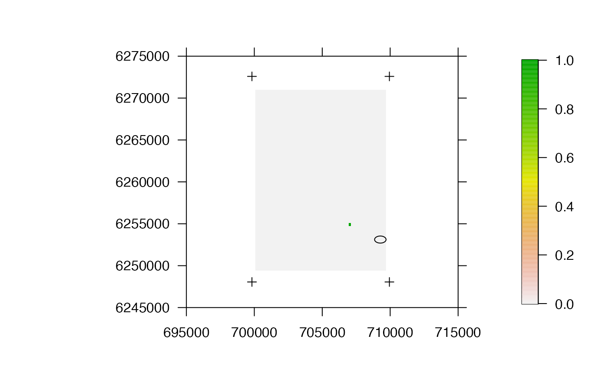
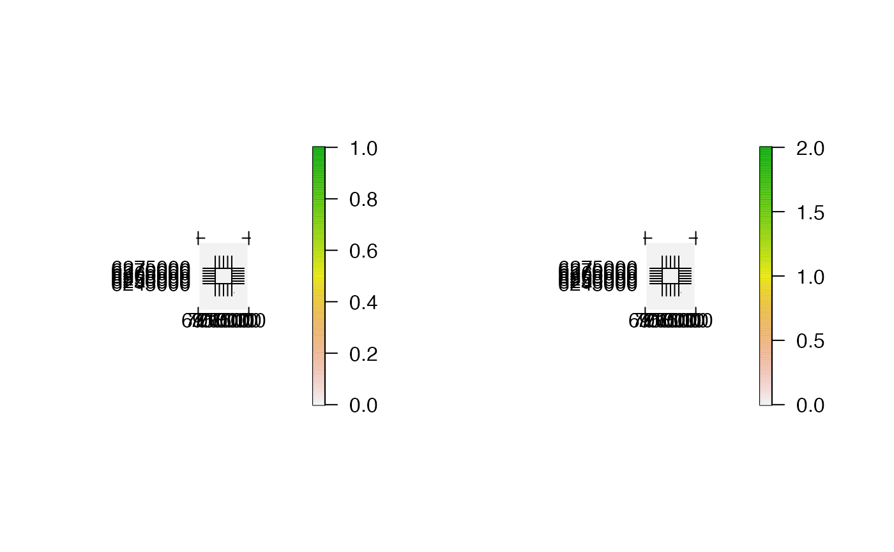
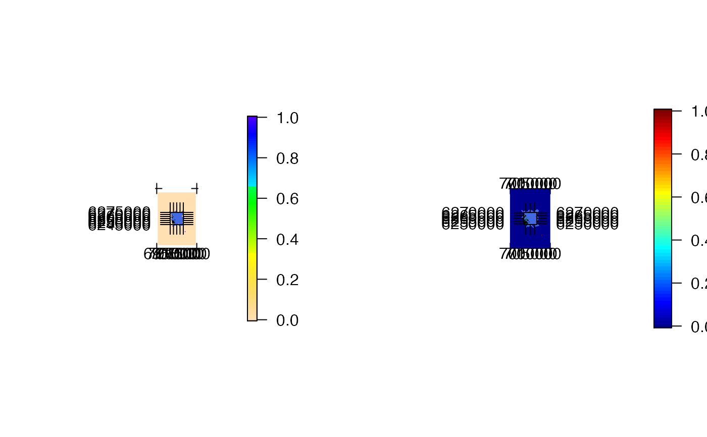

Plot time-specific maps from the AC/DC algorithm(s)
Source:R/acdc_analyse_record.R
acdc_plot_record.RdThis function is used to plot time-specific maps from the AC/DC algorithm(s). To implement the function, an acdc_record-class list from ac, dc or acdc plus acdc_simplify must be supplied, from which the results can be extracted and plotted for specified time steps. For each time step, the function extracts the necessary information; sets up a blank background plot using plot and pretty_axis and then adds requested spatial layers to this plot. Depending on user-inputs, this will usually show a cumulative map of expected time spent in different parts of the study area (from the start of the algorithm to each time point). Coastline, receivers and acoustic containers (if applicable) can be added and customised and the finalised plots can be returned or saved to file.
acdc_plot_record( record, type = c("map_cumulative", "map_timestep"), plot = 1, add_coastline = NULL, add_receivers = NULL, add_raster = list(col = rev(grDevices::terrain.colors(255))), add_containers = list(), add_additional = NULL, crop_spatial = FALSE, xlim = NULL, ylim = NULL, fix_zlim = FALSE, pretty_axis_args = list(side = 1:4, axis = list(list(), list(), list(labels = FALSE), list(labels = FALSE)), control_axis = list(las = TRUE), control_sci_notation = list(magnitude = 16L, digits = 0)), par_param = list(), png_param = list(), cl = NULL, varlist = NULL, verbose = TRUE, check = TRUE, ... )
Arguments
| record | An |
|---|---|
| type | A character that defines the plotted surface(s): |
| plot | An integer vector that defines the time steps for which to make plots. If |
| add_coastline | (optional) A named list of arguments, passed to |
| add_receivers | (optional) A named list of arguments, passed to |
| add_raster | (optional) A named list of arguments, passed to |
| add_containers | (optional) For outputs from the AC* algorithms ( |
| add_additional | (optional) A stand-alone function, to be executed after the background plot has been made and any specified spatial layers have been added to this, to customise the result (see Examples). |
| crop_spatial | A logical variable that defines whether or not to crop spatial data to lie within the axis limits. |
| xlim, ylim, fix_zlim, pretty_axis_args | Axis control arguments. |
| par_param | (optional) A named list of arguments, passed to |
| png_param | (optional) A named list of arguments, passed to |
| cl, varlist | (optional) Parallelisation options. |
| verbose | A logical variable that defines whether or not relay messages to the console to monitor function progress. |
| check | A logical variable that defines whether or not to check user inputs to the function before its initiation. |
| ... | Additional arguments, passed to |
Value
The function plots the results of the AC* algorithm(s) at specified time steps, with one plot per time step. Plots are saved to file if png_param is supplied.
See also
This function is typically used following calls to ac, dc or acdc and acdc_simplify.
Author
Edward Lavender
Examples
#### Step (1): Implement AC/DC algorithm(s) # ... see examples via ac(), dc() and acdc() #### Step (2): Simplify outputs of the AC/DC algorithm(s) dat_acdc <- acdc_simplify(dat_acdc)#>#### Example (1): The default options simply plot the first surface acdc_plot_record(record = dat_acdc)#> flapper::acdc_plot_record() called... #> ... Checking function inputs... #> ... Defining data for background plot...#>#> ... Setting plotting window... #> ... Making plots for each time step ...#> Warning: Nothing to summarize if you provide a single RasterLayer; see cellStats#### Example (2): Define the number of plots to be produced and control the plotting window acdc_plot_record(record = dat_acdc, plot = 1:2, par_param = list(mfrow = c(1, 2), mar = c(8, 8, 8, 8)))#> flapper::acdc_plot_record() called... #> ... Checking function inputs... #> ... Defining data for background plot...#>#> ... Setting plotting window... #> ... Making plots for each time step ...#> Warning: Nothing to summarize if you provide a single RasterLayer; see cellStats#> Warning: Nothing to summarize if you provide a single RasterLayer; see cellStats#### Example (3): Add and customise spatial information via add_* args ## Define a SpatialPoints object of receiver locations proj_wgs84 <- sp::CRS(SRS_string = "EPSG:4326") proj_utm <- sp::CRS(SRS_string = "EPSG:32629") rsp <- sp::SpatialPoints(dat_moorings[, c("receiver_long", "receiver_lat")], proj_wgs84) rsp <- sp::spTransform(rsp, proj_utm) ## Plot with receiver locations and coastline, customise the containers and the raster acdc_plot_record(record = dat_acdc, add_coastline = list(x = dat_coast, col = "darkgreen"), add_receivers = list(x = rsp, pch = 4, col = "royalblue"), add_containers = list(col = "red"), add_raster = list(col = rev(topo.colors(100))) )#> flapper::acdc_plot_record() called... #> ... Checking function inputs... #> ... Defining data for background plot...#>#> ... Setting plotting window... #> ... Making plots for each time step ...#> Warning: Nothing to summarize if you provide a single RasterLayer; see cellStats#### Example (4): Control axis properties # ... via smallplot argument for raster, pretty_axis_args, xlim, ylim and fix_zlim # ... set crop_spatial = TRUE to crop spatial data within adjusted limits acdc_plot_record(record = dat_acdc, add_coastline = list(x = dat_coast, col = "darkgreen"), add_receivers = list(x = rsp, pch = 4, col = "royalblue"), add_containers = list(col = "red"), add_raster = list(smallplot= c(0.85, 0.9, 0.25, 0.75)), crop_spatial = TRUE, pretty_axis_args = list(side = 1:4, control_sci_notation = list(magnitude = 16L, digits = 0)), xlim = raster::extent(dat_coast)[1:2], ylim = raster::extent(dat_coast)[3:4], fix_zlim = c(0, 1) )#> flapper::acdc_plot_record() called... #> ... Checking function inputs... #> ... Defining data for background plot...#>#> ... Setting plotting window... #> ... Making plots for each time step ...#> Warning: Nothing to summarize if you provide a single RasterLayer; see cellStats#### Example (5): Modify each plot after it is produced via add_additional # Specify a function to add titles to a plot add_titles <- function(){ mtext(side = 1, "x (UTM)", line = 2) mtext(side = 2, "y (UTM)", line = -8) } # Make plots with added titles acdc_plot_record(record = dat_acdc, plot = 1:2, par_param = list(mfrow = c(1, 2), mar = c(8, 8, 8, 8)), add_coastline = list(x = dat_coast, col = "darkgreen"), add_receivers = list(x = rsp, pch = 4, col = "royalblue"), add_containers = list(col = "red"), add_raster = list(), crop_spatial = TRUE, xlim = raster::extent(dat_coast)[1:2], ylim = raster::extent(dat_coast)[3:4], add_additional = add_titles )#> flapper::acdc_plot_record() called... #> ... Checking function inputs... #> ... Defining data for background plot...#>#> ... Setting plotting window... #> ... Making plots for each time step ...#> Warning: Nothing to summarize if you provide a single RasterLayer; see cellStats#> Warning: Nothing to summarize if you provide a single RasterLayer; see cellStats#> [1] "25" "28" #> [3] "35" "ACDC_algorithm_demo.html" #> [5] "acdc_log.txt" "css" #> [7] "dot_acdc_log_1.txt" "dot_acdc_log_2.txt" #> [9] "dot_acdc_log_3.txt" "dot_acdc_log_4.txt" #> [11] "dot_acdc_log_5.txt" "downlit" #> [13] "file16ae112203e38.so" "file16ae11339cbd2" #> [15] "file16ae11554aa5d" "file16ae163a5a0bf" #> [17] "images" "js"#> flapper::acdc_plot_record() called... #> ... Checking function inputs...#>#> ... Defining data for background plot...#>#> ... Setting plotting window... #> ... Making plots for each time step ...#> Warning: Nothing to summarize if you provide a single RasterLayer; see cellStats#> Warning: Nothing to summarize if you provide a single RasterLayer; see cellStats#> [1] "1.png" "2.png" #> [3] "25" "28" #> [5] "35" "ACDC_algorithm_demo.html" #> [7] "acdc_log.txt" "css" #> [9] "dot_acdc_log_1.txt" "dot_acdc_log_2.txt" #> [11] "dot_acdc_log_3.txt" "dot_acdc_log_4.txt" #> [13] "dot_acdc_log_5.txt" "downlit" #> [15] "file16ae112203e38.so" "file16ae11339cbd2" #> [17] "file16ae11554aa5d" "file16ae163a5a0bf" #> [19] "images" "js"#### Example (7) To plot the overall map, you can also just use a # ... a raster plotting function like prettyGraphics::pretty_map() ext <- update_extent(raster::extent(dat_coast), -1000) prettyGraphics::pretty_map(x = ext, add_rasters = list(x = dat_acdc$map), add_points = list(x = rsp, pch = "*", col = "red"), add_polys = list(x = dat_coast, col = "lightgreen"), crop_spatial = TRUE, xlab = "Easting", ylab = "Northing" )#>#>